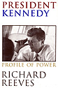
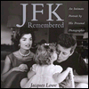
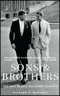
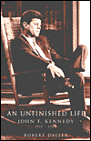

President, United States, 1961-1963
|
"The definitive life
of JFK...shows us, better than ever before, how the ambitious
playboy began his transformation into the charismatic President."
- Mail on Sunday |
|
|
|
As World War 2 was ending and the cold war just beginning, a 28-year-old naval hero, decommissioned early due to crippling injuries, traveled through a devastated Europe. During the trip, he kept a journal that shows that this trip was a turning point in the future president's life. The scion of one of the United States' wealthiest families, John F. Kennedy grew up in the shadow of an older brother from whom great things were expected. When Joe Kennedy, Jr. was killed in the skies over the English Channel, the expectations and mantle of leadership passed to JFK. As he traveled in the company of cabinet secretaries, generals, future presidents, and prime ministers, and as he toured a humbled Germany and saw the practice of power by Soviet Communists, he questioned accepting it. It was in these pages that he first confronted the "long twilight struggle" for the preservation of Western freedom that would define his own future presidency in the United States. It was at this time that Kennedy began laying plans for his first run for Congress. Prelude to Leadership offers insight into the mind of a young man preparing himself for a "still distant challenge." |
|
|
|
Nearly everyone who was alive and aware in 1963 can remember where they were when they heard of the assassination of President John F. Kennedy. No single event stood out so sharply in people's memories or shocked so many so deeply. But Kennedy's tragic death has colored our view of his life, creating a national blind spot that has hindered a fair assessment of his administration. In The Presidency of John F. Kennedy, historian James Giglio provides a succinct, comprehensive, and highly readable assessment of the Kennedy years. As a man, Giglio contends, Kennedy was indeed charming, witty, intelligent, and handsome, but he was also ambitious and vulnerable - a man who often failed to measure up to his romantic image. As president, Kennedy did deal effectively with many domestic economic and social issues, but he provided only sporadic and belated leadership in civil rights. And according to Giglio, Kennedy made little effort to combat poverty. He was more adept at managing foreign crises than preventing them, and by 1963, Giglio writes, Kennedy was on a collision course in Vietnam. "Covering every important domestic
and foreign topic, this treatment is at once balanced, comprehensive,
authoritative, and readable. . . . With this book, Kennedy studies
at last move beyond both apology and revisionism to dispassionate
analysis and mature reflection." - Allen J. Matusow |
|
|
|
President Kennedy: Profile of Power Reeves ... offers an excellent study of Kennedy as crisis manager. He presents Kennedy as neither an amoral playboy nor the ruler of Camelot but a poorly prepared president with mediocre congressional experience. Each chapter presents a different day in the administration - a unique format that effectively reveals how Kennedy responded to simultaneous harrowing issues. The Berlin Wall, the Cuban Missile Crises, Vietnam, and the diplomacy of arms reduction illustrate how Kennedy was constrained by the unshakable Cold War fear of monolithic communism ... a thorough, even-handed review of the Kennedy years. - Karl Helicher |
|
|
|
Strongly evoking the passions
of the time, a straightforward, balanced account of a major victory
in American diplomacy. Starting with an effective description
of 1962's political climate, the author outlines Kennedy's hopeful
presidency, rising tensions with the USSR and Cuba, and Soviet
denials of their placement of offensive weapons in Cuba. He then
provides detailed information on exactly how Kennedy and his
advisors managed their end of the crisis and some Soviet politics
as well. - Kirkus Reviews |
|
|
|
JFK Remembered: An Intimate Portrait
by His Personal Photographer An unprecedented, behind-the-scenes portrait of JFK and the Camelot years--published on the thirtieth anniversary of the assassination. Lowe, a support staffer in Kennedy's fiercely loyal campaign entourage, was deputized as the candidate's personal photographer. He clicked such good poses for magazine covers, and candids for posterity - of rallies, of family, and of the nail-biting waiting on election night of 1960 - that the president-elect told him, "You've done fine so far. Just continue." This adoring album is divided into images from the 1960 campaign and those of JFK exercising power ... Lowe, an important participant in the myth of Camelot, responded to his boss's trust with many intimate, character-capturing, and celebrated frames, and JFK's adorers will surely savor them. - Gilbert Taylor |
|
|
|
Packed with never-before-seen photographs,
The Kennedy White House reveals the world's most famous
family, unstaged and as they were, both behind White House doors
and in their private homes in Virginia, Palm Beach, Newport,
and Hyannis Port. Carl Sferrazza Anthony's fascinating narrative
brings new insight to the Kennedy story, in the first book to
place the family within the context of 1960's culture and view
historical events uniquely from the personal perspective of their
family life. A candid and compelling tour, The Kennedy White
House takes you inside the world's most famous goldfish bowl
for a glimpse at life in the White House as never seen before. |
|
|
|
Sons and Brothers: The Days of Jack
and Bobby Kennedy This intriguing book brings a fresh perspective to bear on the intimate, charged partnership of John and Robert Kennedy. The author, Richard D. Mahoney, whose father was a friend of Bobby's and an appointee of Jack's, has both the academic and political experience necessary to evaluate evidence of the Kennedys' relations with the Mafia, anti-Castro rebels, and other groups lurking in the shadows of American life. He also has a sharp eye for the brothers' differing yet complementary personalities. Jack was intellectual and cheerfully cynical, with a zest for pleasure increased by a life-threatening illness concealed from the public. He looked to passionate, partisan Bobby for bulldog-like political support and used his brother as a "moral compass" when planning his administration's actions on civil rights, the corruption of organized labor, and the containment of Communism. Their powerful father, Joseph - whose deep pockets basically bought Jack the presidency and at the same time compromised it because of Joseph's links to organized crime - looms over the brothers as the author of a Faustian bargain that may well have played a role in JFK's assassination. Mahoney's vivid, compulsively readable text offers suggestive questions rather than definitive answers, but it certainly succeeds as a bracing corrective to "America's inability to see its history as tragedy," a failure Jack and Bobby emphatically did not share. - Wendy Smith |
|
|
|
Geoffrey Perret's Jack is the first account of Kenndy's life based on the extensive and important documentary record that finally became available, including Kennedy's personal diaries, hundreds of hours of taped conversations from the White House, declassified government documents, extensive family correspondence, and crucial interviews sealed for nearly forty years. The result is a gripping, accurate, and ultimately moving portrait of America's most charismatic president. Jack provides much-needed context and perspective on Kennedy's bewilderingly complex personality. It offers an even-handed account of the seamy side of his life, along with valuable insights into JFK's truly idealistic and visionary character. Jack presents a compelling account of the volatile relationship between Kennedy and his wife. At the same time, Perret explains how, together, they created the Kennedy style. And here, for the first time, is a comprehensive account of Kennedy's numerous and varied ailments from childhood on, including his back problems. Jack reveals how the restless, innovative Kennedy was able to overturn more than a hundred years of political tradition, forge the modern political campaign, and, once in the White House, modernise the presidency. His success was so complete that all serious presidential candidates since 1960 have sought to compare themselves to JFK, not challenging his legacy but embracing it. Perret describes Kennedy's handling of the Cuban missile crisis and his stance on civil rights. As to Vietnam, Kennedy did not believe it was worth fighting for, and in the last months of his presidency he began formulating a secret plan for neutralization and withdrawal - if he won the 1964 election. But that, of course, was not to be: Convinced he would die young, Kennedy foresaw that a violent death would claim him. Throughout his brief time in the White House he was haunted by a vision of a man standing at a window, looking down at him, holding a rifle. In Jack: A Life Like No
Other, Kennedy seems to step off the page in all his vitality,
charm, and originality. |
|
|
|
An Unfinished Life: John F. Kennedy.
1917 - 1963 An Unfinished Life is the first major, single-volume life of Kennedy by a historian in nearly four decades. Drawing upon previously unavailable material and never-before-opened archives to tell Kennedy's story. We learn for the first time just how sick Kennedy was, what medications he took and concealed from all but a few, and how severely his medical condition affected his actions as President. We learn for the first time the real story of how Bobby Kennedy was selected as Attorney General. Dallek reveals exactly what Jack's father did to help his election to the presidency, and he follows previously unknown evidence to show what path JFK would have taken in the Vietnam entanglement had he survived. Dallek lists JFK out of the gossips and back onto the world stage, showing that while he was the son of privilege, he faced great obstacles and fought on with remarkable courage. Never shying away from Kennedy's weaknesses, Dallek also brilliantly explores his strengths. The result is a portrait of a bold, brave, human Kennedy, once again a hero. |
|
|
|
Official website of the John F. Kennedy Library in Boston offers access to a wealth of documents, photos, and exhibits that spotlight Kennedy's administration and the events that helped to shape it. Online educational programs cover the 1960 election, the Cuban missile crisis, the space program, the civil rights struggle, and biographies of Kennedy and his wife Jacqueline. . |
 Prelude to Leadership: The European
Diary of John F. Kennedy, Summer 1945
Prelude to Leadership: The European
Diary of John F. Kennedy, Summer 1945